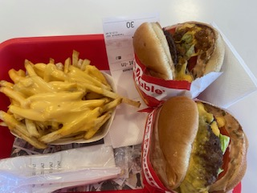
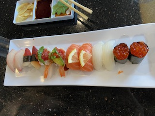
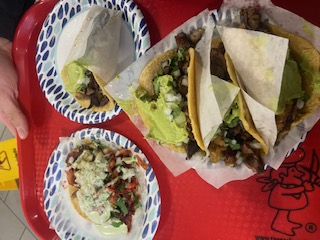
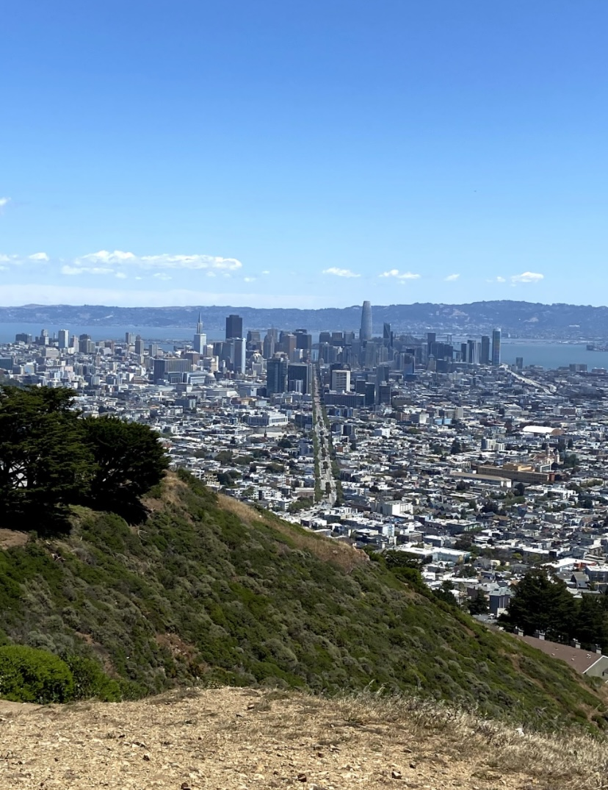
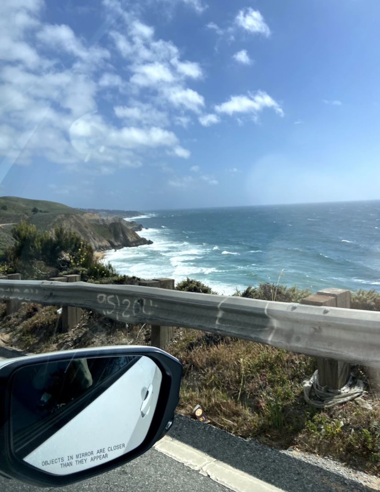
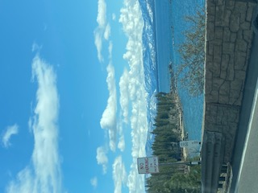

<!DOCTYPE html>
<html lang="en">
<head>
<meta charset="UTF-8">
<meta name="viewport" content="width=device-width, initial-scale=1.0">
<meta http-equiv="X-UA-Compatible" content="ie=edge">
<meta name="Description" content="Enter your description here"/>
<link rel="stylesheet" href="https://cdnjs.cloudflare.com/ajax/libs/twitter-bootstrap/5.1.0/css/bootstrap.min.css">
<link rel="stylesheet" href="https://cdnjs.cloudflare.com/ajax/libs/font-awesome/5.15.4/css/all.min.css">
<link rel="stylesheet" href="assets/css/howdy.css">
<title>All About Me</title>
</head>
<body>

<script src="https://cdnjs.cloudflare.com/ajax/libs/popper.js/2.9.2/umd/popper.min.js"></script>
<script src="https://cdnjs.cloudflare.com/ajax/libs/twitter-bootstrap/5.1.0/js/bootstrap.min.js"></script>
</body>
</html>

<!--Introduction-->
    <div class="container">
        <div class="bg-light text-dark border-light">Hello my Name is Maragret Storey, but prefer to go
            by Maggie. I am from Las Vegas, NV and moved up to Reno, NV for 3 years then back down to Las Vegas. 
            I am hoping by 2024 I can move to Colorado. Some of my hobbies are playing video games and exploring 
            new restuarants. I am a big foodie and am always down to try new things.   
    </div>

<!-- Main section-->
    <section class="bg-light text-dark p-10 p-lg-0 pt-lg-10 p-md-10 text-center text-sm-start shadow p-3 mb-5 bg-body">
        <div class="container p-5 bg-light">
            <div class="row-md col-sm">
                <div class="d-md-flex bg-light align-items-center justify-content-evenly">
                    <h1 class="col-lg-2 col-md-6 pe-sm-5">Meet Muffin. My cat/best friend</h1>
                    
                    
                </div>
            </div>
        </div>
    </section>

    <!-- Second Panel -->
    <section id="Food" class="p-10 p-lg-0 lg-10 text-center text-sm-start">
        <div class="container mt-10 p-5">
            <div class="row-md col-sm">
                <div class="d-sm-flex align-items-center justify-content-evenly">
                
                
                
                <h1 class="p-5 col-lg-2 col-md-6">Some of my favorite spots</h1>
                </div>
            </div>
        </div>
    </section>

    <!--Food section-->
    <div class="container">
        <div class="bg-light text-dark border-light">The food shown are a few of my favorite places to eat. I am 
            very glad I can say I live in a state that has In n Out. They have some of the best burgers, in my opinion.
            I am also a huge sushi fan. I really enjoy going to all you can eat sushi with my friends. You really can never 
            go wrong with tacos, there are so many options and toppings. I really enjoy eating at Tacos el Gordo in Las Vegas.   
    </div>

    <!-- Third Panel-->
    <section class="bg-light text-text p-10 pt-lg-10 p-lg-0 text-center text-sm start">
        <div class="container-mt-10 p-5">
            <div class="d-sm-flex align-items-center justify-content-evenly">
                <h1 class="p-5 col-lg-2 col-md-6"></h1>
                
                
                
            </div>
        </div>
    </section>

    <!-- Fourth Panel-->
    <div class="container">
        <div class="bg-light text-dark border-light">Travelling is one of my favorite things to do! I really enjoy
            Northern California and Lake Tahoe. The first image is a photo I took at the beach in Santa Cruz. I love the 
            weather and boardwalk. The Second image is of San Francisco. I had found a hiking trail that got a great view 
            of the city. The view is a lot cooler in person compared to my phone. The final image is of Lake Tahoe. When
            living in Reno, I had went to Tahoe very often. The lake is stunning and there are many cool hiking trails.    
    </div>

<script src="https://cdnjs.cloudflare.com/ajax/libs/popper.js/2.9.2/umd/popper.min.js"></script>
<script src="https://cdnjs.cloudflare.com/ajax/libs/twitter-bootstrap/5.1.0/js/bootstrap.min.js"></script>
</body>
</html>